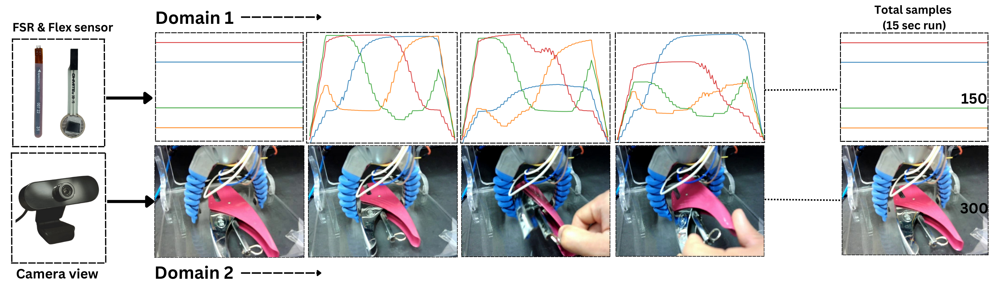
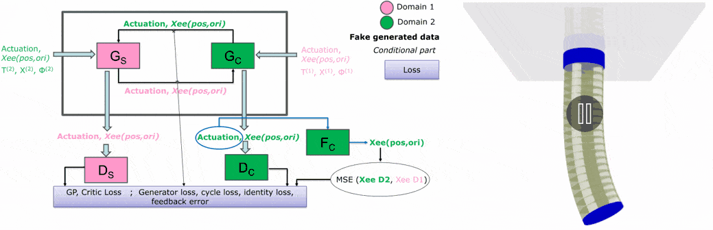
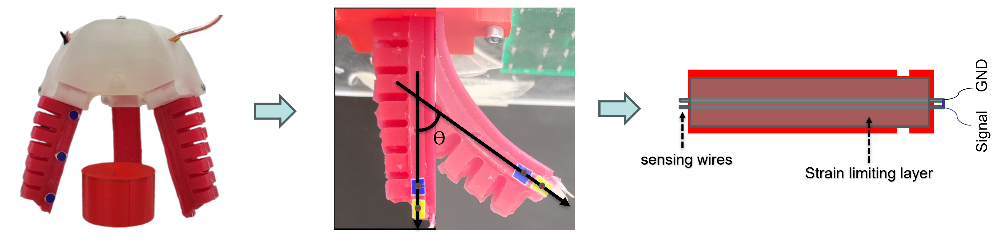

2025
Continual Learning for Multimodal Data Fusion of a Soft Gripper
N. Kushawaha, E. Falotico
Advanced Robotics Research, Wiley
Paper ↗

We developed a continual learning framework for multimodal semi-supervised learning, allowing new sensing
modalities to be integrated incrementally without retraining from scratch. We demonstrated the approach on a soft
pneumatic gripper equipped with force, bend, and vision sensors, synchronized through ROS.
Domain Translation of a Soft Robotic Arm using Conditional Cycle Generative Adversarial Network
N. Kushawaha, C. Alessi, L. Fruzetti, E. Falotico
IEEE ICRSA 2025
Paper ↗

We developed a control algorithm based on a conditional cycle generative adversarial network to
transfer a pose controller from a standard simulation environment to a domain with tenfold higher viscosity.
The approach was evaluated in simulation on the I-Support soft robotic arm for trajectory tracking tasks.
Adaptive Drift Compensation for Soft Sensorized Finger Using Continual Learning
N. Kushawaha, R. Pathan, N. Pagliarani, M. Cianchetti, E. Falotico
IEEE RoboSoft 2025
Paper ↗

We developed an adaptive continual learning algorithm to model the drift present in a soft finger with an
embedded piezoelectric sensor used for proprioception. The algorithm jointly models the sensor's inherent drift and
the non-linearity of the soft structure, online.
2024
SynapNet: A Complementary Learning System Inspired Algorithm With Real-Time Application in Multimodal Perception
N. Kushawaha, L. Fruzzetti, E. Donato, E. Falotico
IEEE Transactions on Neural Networks and Learning Systems
Paper ↗

We developed an algorithm inspired by CLS theory, combining a fast learner with a slow consolidator,
enhanced by a VAE-based pseudo-episodic memory. The approach integrates lateral inhibition to suppress redundant neuronal
activity and employs a sleep phase to reorganize learned representations. We demonstrated its effectiveness in real-time
object classification using proprioceptive signals from a soft sensorized gripper operating in a dynamic environment with
an unknown number of classes.
2022
Separation of electrons from pions in GEM TRD using deep learning
N. Kushawaha, Y. Furletova, A. Roy, D. Romanov
Paper ↗
A study of Artificial Neural Network and its implementation from scratch
N. Kushawaha, A. Roy
Paper ↗